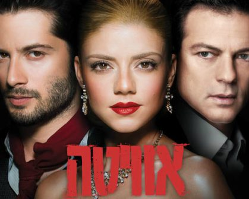

1134
אוויטה
110 ש"ח
25/11/17
תיאטרון הבימה
המחזמר שזכה בפרס ההצגה הטובה ביותר לשנת 2015 לפי דירוג גולשי "עכבר העיר" וב-7 פרסי "טוני" ופרס ה"גראמי" מגולל את סיפור חייה ומותה של אוויטה פרון, שהגיעה מהפרובינציה, הייתה לשחקנית והעפילה למעמד רעיית נשיא ארגנטינה – הקולונל חואן פרון. המחזמר מלווה את אוויטה מתחילת דרכה ועד הגעתה לשלטון, לסטטוס ולעושר מופלג, שהביאו להכתרתה כ'מנהיגתה הרוחנית של האומה'. מולה ניצב המהפכן צ'ה גווארה, המייצג את המהפכה החברתית ועוקב אחר עלייתה לשלטון. במחזמר מספר שירים ידועים ואהובים, וביניהם: "DON’T CRY FOR ME, ARGENTINA"(אל נא תבכי, ארגנטינה). המחזמר זכה למספר רב של גרסאות בעולם וביניהם לסרט בכיכובה של זמרת הפופ מדונה. משך ההצגה: כשעתיים ו-20 דקות כולל הפסקה. ניתן לרכוש כרטיסים גם דרך משרדי "לאן".
- 